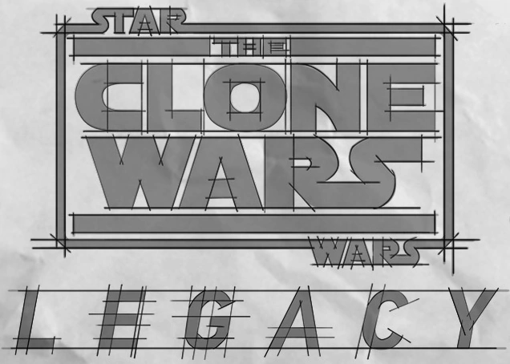

Star Wars: The Clone Wars was
cancelled on March 11th
2013 with 65 episodes remaining unaired
March 4th
2014 saw the release of the 13 episodes that had been completed and intended for
the first half of the planned 6th
season that was meant to air in the fall of 2013 (3 of those episodes being
delayed from season 5). This left a total of 52 episodes left unfinished.
May 21st
to August 20th
2014 saw the release of a Comic adaption of the Son of Dathomir story arc
September 25th
2014 saw the Release of the 4 unfinished story reels of the Crystal Crisis on
Utapau story arc
April 29th
2015 saw the release of the 4 unfinished story reels for the Bad Batch story arc
July 7th
2015 saw the release of the Dark Disciple Novel, which was an adaption of 2
unfinished story arcs (Dark Disciple & Saving Vos)
February 21st
2020 to May 4th
2020 saw a 12 episode season release for the previously story reeled Bad Batch
Arc, an altered version of the Ahsoka’s Walkabout story arc (now called Ahsoka’s
Journey) and what was meant to be the shows 8th
season finale, The Siege of Mandalore.
As of 2023 there is 40 unfinished episodes of Star Wars:
The Clone Wars
This site will get updated alongside respective video releases
Please click the buttons at the top of the page to go to each respective originally planned season.